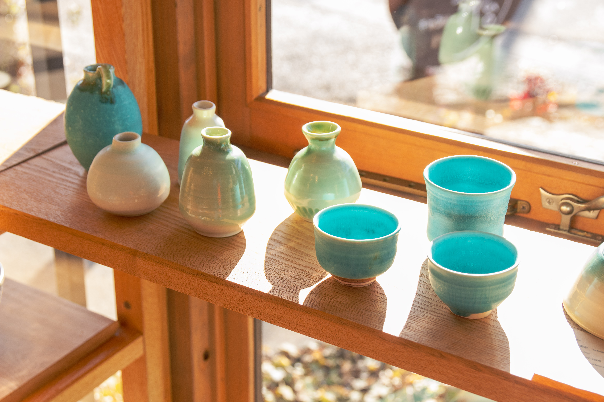
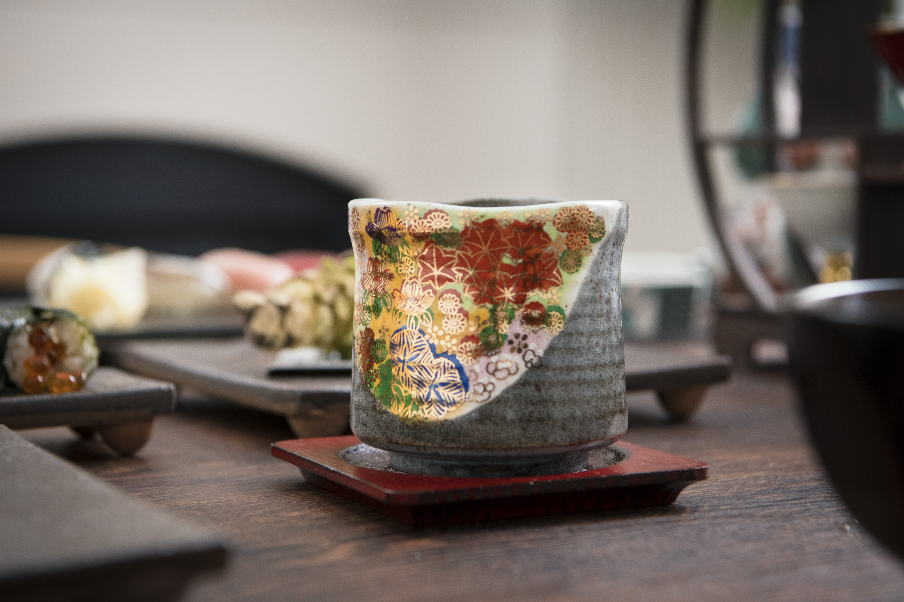
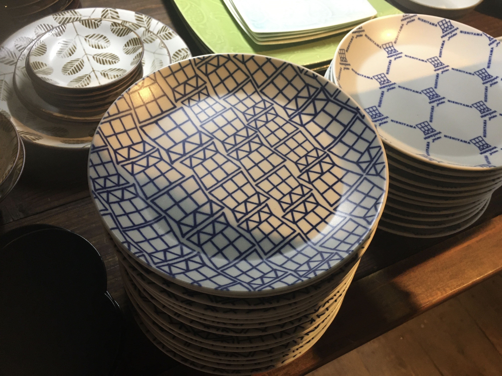
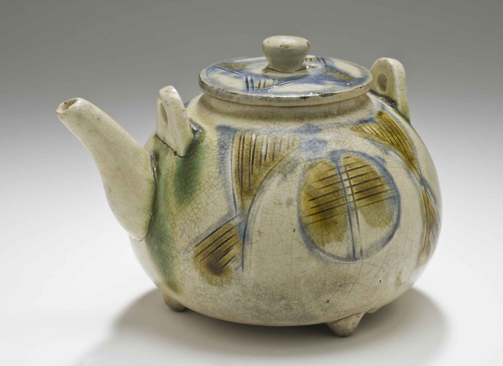

Between Tea and Ceramics
Holding a moment of tea in the palm of your hand. On vessels, beauty and everyday life in Japan.
2026.11.08JAPANESE CULTURE JOURNAL
CATEGORY / CERAMICS
Clay and fire, makers and users: culture through vessels.
18 stories
Holding a moment of tea in the palm of your hand. On vessels, beauty and everyday life in Japan.
2026.11.08From Kanto to Okinawa: an introduction to 16 ceramic traditions, their places and character.
2026.11.08Swap the usual breakfast plate for one with a different rim or glaze. The toast stays the same, but the meal feels newly considered. You can begin exploring Mashiko with something you want to use tomorrow, without first learning a vocabulary of ceramics.
2026.11.08
Your tableware does not need to match. A smooth cup beside a bowl with fine ridges can be a pleasure in itself. That contrast is a useful starting point for Kasama, where following individual makers is often more rewarding than searching for one regional look.
2026.11.08
Colorful ceramics need not wait for a celebration. Add a painted cup to a table of plain white plates and an ordinary tea break can feel different. A single object is enough to begin exploring Kutani's relationship with pictures and color.
2026.11.08Curry, pasta or something from the deli: enjoying ceramics does not require an elaborate meal. Mino's range becomes easier to navigate when you start with the food you actually eat and ask what color and shape would make it comfortable to serve.
2026.11.08Blue-and-white pottery need not be reserved for Japanese food. Bread or cheese on a painted plate can make an ordinary table feel fresh. White and blue offer an accessible way into Seto's broad ceramic landscape.
2026.11.08You do not need a complete tea service. A small teapot and cups you already own are enough to add a pause to the day. Start exploring Tokoname by asking how many people you make tea for, rather than how much you know about tea ceremony.
2026.11.08Imagine the vessel you cook in becoming the center of the table. Banko offers a route into that connection between preparation and serving, whether you are sharing a large meal or making something warm for one.
2026.11.08White ceramics are not all alike. Some whites feel soft, some reveal hints of clay, and others catch a delicate shadow. If Shigaraki first brings tanuki figures to mind, an everyday bowl offers another way into the region.
2026.11.08Kyoto ceramics may suggest something precious kept in a display cabinet. Yet makers also begin with ordinary meals and practical use. The interesting question is how a special object can become part of your everyday table.
2026.11.08If a brown vessel seems too austere, imagine white tofu or green vegetables on it. A restrained surface can make the food's color and shape more noticeable. Approach Bizen through tonight's meal rather than through knowledge of antiques.
2026.11.08A brief tea break can still include the pleasure of choosing a cup. Hagi's soft character can belong on a small table at home as readily as in a formal setting. Begin with the moment you want to make space for.
2026.11.08Rice, noodles and a prepared side dish ask a lot of everyday tableware. A piece you reach for repeatedly should be enjoyable to look at as well as useful. Tobe's white and blue can enter your home through one frequently used dish.
2026.11.08Where you place food on a white plate can change a whole setting. Explore Arita as a tool for everyday meals as well as an object for special occasions.
2026.11.08A vessel looks different before and after food is added. When choosing Karatsu ware, imagine a meal as well as an empty object.
2026.11.08
Love tableware but have limited storage? Instead of searching for a plate that does everything, think of three meals you often eat. Let the scale of your daily life guide your introduction to Hasami.
2026.11.08
A vessel you fall for while travelling can remain part of life at home. Imagine your usual meals alongside your memories of Okinawa. Using the piece is one way to continue the journey.
2026.11.08Photo credits and licenses appear below the photographs in each article.
Brewing, tasting and pausing: stories around a moment of tea.
1 story02 / FLOWERSSeasonal flowers and the gesture of arranging them.
0 stories03 / CERAMICSClay and fire, makers and users: culture through vessels.
18 stories04 / KIMONOWearing cloth, discovering colors, patterns and craft.
0 stories05 / FOODStories of place and season behind the table.
0 stories06 / IDEASPausing in daily life to consider how we see the world.
0 stories